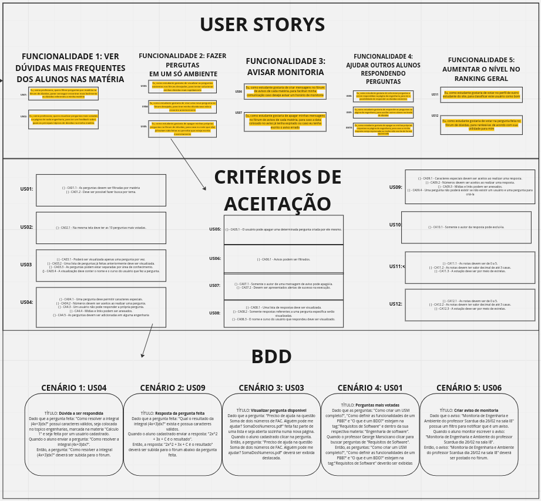

PBB & BDD Canvas
Link de acesso ao miro: https://miro.com/app/board/uXjVP5R0Pa0=/?share_link_id=566469054676
Product Backlog Building
Problemas
- Falta de centralização das dúvidas da comunidade FGA.
- Dificuldade dos professores de saber os principais pontos de dúvidas dos alunos nas matérias
- Dificuldade em conseguir marcar um horário de tiradas de dúvidas
- Dificuldade de encontrar respostas para suas dúvidas
- Falta de motivação para os alunos na hora de ajudar seus colegas
Expectativas
- Encontrar em um único lugar questões relacionadas as disciplinas da FGA.
- Rankeamento das perguntas mais votadas em cada área nas matérias específicas
- Poder avisar um horário para tirar dúvidas
- Postagem de respostas para perguntas de pessoas que dominam assuntos de interesse.
- Incentivo através de um rankeamento para os outros alunos
Personas
Iracema: 43 anos, formada em Engenharia Ambiental, professora de Desenvolvimento Sustentavel
FAZ:
- TIRAR DÚVIDAS DE ALUNOS PRESENCIALMENTE
- CRIAR FORMULÁRIOS PARA RECEBER FEEDBACKS DAS MATÉRIAS
ESPERA;
- VER DÚVIDAS MAIS FREQUENTES DOS ALUNOS NAS MATÉRIAS
Julio Carlos: 20 anos, estudante de engenharia de software e monitor
FAZ:
- MANDAR PERGUNTAS NOS MEIOS DE COMUNICAÇÃO
- MARCAR MOMENTO DE TIRAR DUVIDAS
ESPERA:
- FAZER PERGUNTAS EM UM SÓ AMBIENTE
- AVISAR MENTORIA
- AJUDAR OUTROS ALUNOS RESPONDENDO PERGUNTAS
- AUMENTAR SEU NÍVEL NO RANKING GERAL
Funcionalidades
VER DÚVIDAS MAIS FREQUENTES DOS ALUNOS NAS MATÉRIAS
- PROBLEMAS: Dificuldade dos professores de saber os principais pontos de dúvidas dos alunos nas matérias
- BENEFÍCIOS: Rankeamento das perguntas mais votadas em cada área nas matérias específicas
FAZER PERGUNTAS EM UM SÓ AMBIENTE
- PROBLEMAS: Falta de centralização das dúvidas da comunidade FGA.
- BENEFÍCIOS: Encontrar em um único lugar questões relacionadas as disciplinas da FGA.
AVISAR MENTORIA
- PROBLEMAS: Dificuldade em conseguir marcar um horário de tiradas de dúvidas
- BENEFÍCIOS: Poder avisar um horário para tirar dúvidas
AJUDAR OUTROS ALUNOS RESPONDENDO PERGUNTAS
- PROBLEMAS: Dificuldade de encontrar respostas para suas dúvidas
- BENEFÍCIOS: Postagem de respostas para perguntas de pessoas que dominam assuntos de interesse.
AUMENTAR SEU NÍVEL NO RANKING GERAL
- PROBLEMAS: Falta de motivação para os alunos na hora de ajudar seus colegas
- BENEFÍCIOS: Incentivo através de um rankeamento para os outros alunos
PBIs
VER DÚVIDAS MAIS VOTADAS DOS ALUNOS NAS MATÉRIAS
- US01: Eu, como professora, quero filtrar perguntas por matéria no fórum de dúvidas, parar conseguir encontrar mais facilmente as dúvidas referentes a minha matéria
- US02: Eu, como professora, quero visualizar perguntas mais votadas na página de cada engenharia, para ter um feedback sobre quais os principais tópicos de dúvidas na minha matéria
FAZER PERGUTAS EM UM SÓ AMBIENTE
- US03: Eu, como estudante gostaria de visualizar as perguntas existentes nos fóruns desejados, para tentar solucionar minhas dúvidas mais rapidamente
- US04: Eu, como estudante gostaria de criar uma nova pergunta no fórum desejado, para tirar minha dúvida caso não a encontre anteriormente
- US05: Eu, como estudante gostaria de apagar minhas próprias perguntas no fórum de dúvidas, para caso eu note que elas já haviam sido feitas ou perceba que esteja escrita
AVISAR MONITORIA
- US06: Eu, como estudante gostaria de criar mensagens no fórum de avisos de cada matéria, para facilitar minha comunicação caso deseje avisar um horário de monitoria
- US07: Eu, como estudante gostaria de apagar minhas mensagens no fórum de avisos de cada matéria, para caso a data colocado no aviso já tenha expirado ou caso eu tenha escrito o aviso errado
AJUDAR OUTROS ALUNOS RESPONDENDO PERGUNTAS
- US08: Eu, como estudante gostaria de selecionar perguntas a serem respondidas na página da engenharia, para ter a possibilidade de responder as dúvidas existentes
- US09: Eu, como estudante gostaria de responder as perguntas na página da engenharia, para auxiliar outros alunos na tirada de dúvidas
- US10: Eu, como estudante gostaria de apagar as minhas próprias respostas na página da engenharia, para caso a minha resposta esteja equivocada ou tenha
AUMENTAR SEU NÍVEL NO RANKING GERAL
- US11: Eu, como estudante gostaria de votar no perfil de outro estudante do site, para classificar este usuário como bom
- US12: Eu, como estudante gostaria de tirar meu voto no perfil de outro estudante do site, para caso eu tenha votado equivocadamente ou não ache que ele solucionou minha dúvida
Behavior Driven Development

CENÁRIO 1: US04
TÍTULO: Dúvida a ser respondida
- Dado que a pergunta feita: "Como resolver a integral (4x+3)dx?" possui caracteres válidos, seja colocada no topico engenharias, marcada na materia "Calculo 1" e seja feita por um usuário cadastrado.
- Quando o aluno enviar a pergunta: "Como resolver a integral (4x+3)dx?".
- Então, a pergunta: "Como resolver a integral (4x+3)dx?" deverá ser subida para o fórum.
CENÁRIO 2: US09
TÍTULO: Resposta da pergunta feita
- Dado que a pergunta feita: "Qual o resultado da integral (4x+3)dx?" exista e possua caracteres válidos.
- Quando o aluno cadastrado enviar a resposta: "2x^2 + 3x + C é o resultado".
- Então, a resposta: "2x^2 + 3x + C é o resultado" deverá ser subida para o fórum abaixo da pergunta feita.
CENÁRIO 3: US03
TÍTULO: Visualizar pergunta disponível
- Dado que a pergunta: "Preciso de ajuda na questão Soma de dois números de FAC. Alguém pode me ajudar? SomaDosNumeros.pdf" feita faz parte de uma lista e seja aberta sozinha numa nova página.
- Quando o aluno cadastrado clicar na pergunta.
- Então, a pergunta: "Preciso de ajuda na questão Soma de dois números de FAC. Alguém pode me ajudar? SomaDosNumeros.pdf" deverá ser exibida destacada.
CENÁRIO 4: US01
TÍTULO: Perguntas mais votadas
- Dado que as perguntas: "Como criar um USM completo?", "Como definir as funcionalidades de um PBB?" e "O que é um BDD?" estejam na tag:"Requisitos de Software" e dentro da sua respectiva materia: "Engenharia de software".
- Quando o professor George Marscicano clicar para buscar perguntas de "Requisitos de Software".
- Então, as perguntas: "Como criar um USM completo?", "Como definir as funcionalidades de um PBB?" e "O que é um BDD?" estejam na tag:"Requisitos de Software" deverão ser exibidas ordem crescente de votos.
CENÁRIO 5: US06
TÍTULO: Criar aviso de monitoria
- Dado que o aviso: "Monitoria de Engenharia e Ambiente do professor Scardua dia 26/02 na sala I8" possua um filtro para notificar que é um aviso.
- Quando o aluno monitor escrever o aviso: "Monitoria de Engenharia e Ambiente do professor Scardua dia 26/02 na sala I8".
- Então, o aviso: "Monitoria de Engenharia e Ambiente do professor Scardua dia 26/02 na sala I8" deverá ser postado no fórum.